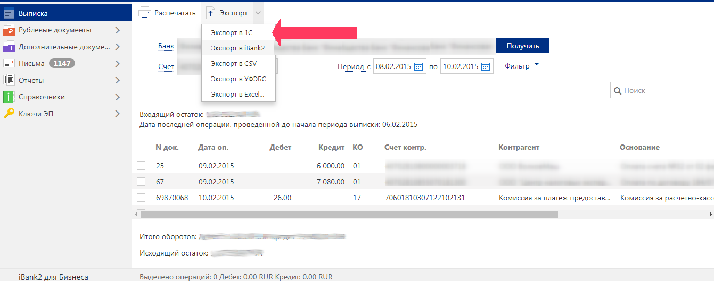
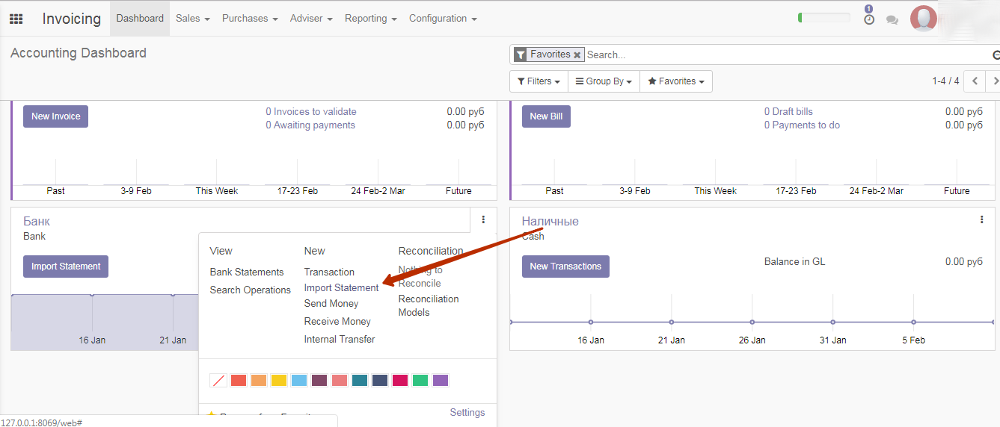
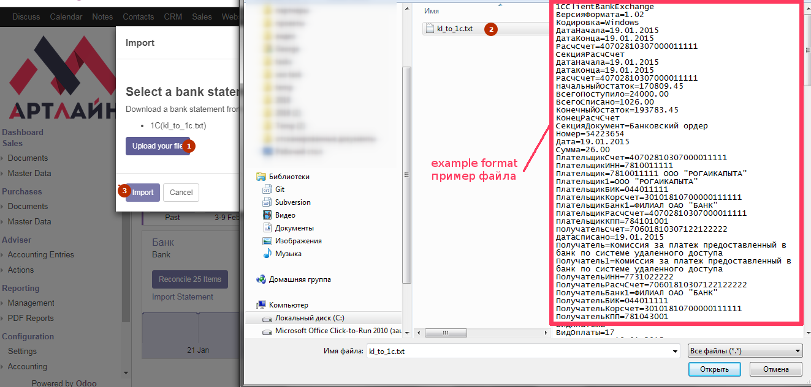
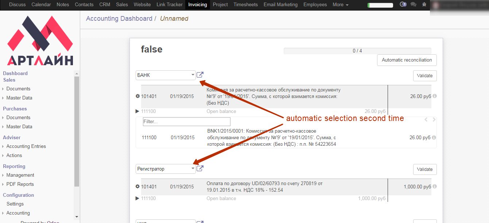
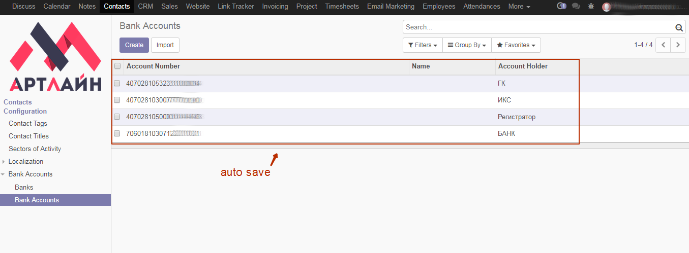

This module allows you to Import bank statements 1C format to Odoo. Requires TXT export from internetbanking. See example below on screenshot.
Данный модуль позволяет импортировать банковские транзакции в формате 1С в Odoo. Требуется экспорт из интернет банкинга в файл TXT формата 1С. Смотрите пример формата 1С ниже на снимке.
To use this module, you need to: / Для использования данного модуля Вам необходимо



The search for a partner is carried out by the bank account number or by the name of the partner. After validation of the bank statement, bank account numbers are saved with the respective partners, and in all the following imports this partner will be selection automatically
Поиск партнера производится по банковскому счету, а если счет не найден, то по имени партнера. После валидации выписки будут сохранены номера банковских счетов каждого партнера в Odoo, и при последующих импортах партнер будет определяться автоматически.


If you need any help or want more additional features, please contact us: / Если Вам нужен счет на оплату (с НДС), помощь или дополнительные функции, пожалуйста свяжитесь с нами:
Email: info@artline-erp.ru
Website: https://artline-erp.ru/
This module has been written by ArtLine <info@artline-erp.ru>.